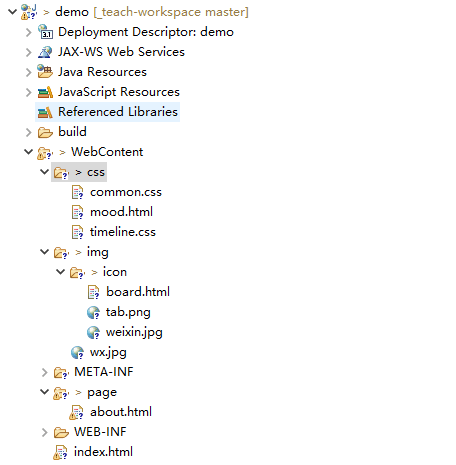

定义一个Servlet的三个步骤是: 第一步: ; 第二步: ; 第二步: ;
关于定义一个Servlet的三个步骤中: 一般继承是指继承: 类; 实现一般是实现2个方法, 分别是( 按字母顺序填写 ): 和方法; 配置有2种方式: 1.基于文件方式 2.基于方式
请参考:web应用路径问题（相对路径，绝对路径，动态获取路径） 是以 “ / ” 开头的路径，是完整的路径。 是不以 “ / ” 开头的路径，是相对于当前web资源目录的路径。 在绝对路径中， “ / ” 的含义有两种解释： （1）如果是服务器端解析， “ / ” 代表相对于 的绝对路径，即：协议名://服务器名（主机地址）:端口号/项目名/， 例如：http://localhost:8080/MyTest/。 （2）如果是浏览器端解析（出现在地址栏里的路径）， “ / ” 代表相对于 的绝对路径，即：协议名://服务器名（主机地址）:端口号/， 例如：http://localhost:8080/。
 参考工程截图: 定义一个资源名为 hello.s, 请根据要求为其配置地址: 1. 在浏览器中通过 127.0.0.1/demo/hello.s 进行访问 2. 在浏览器中通过 127.0.0.1/demo/test/page/hello.s 进行访问 3. 要求与 board.html 位于同一个目录( 路径 )下 4. 要求 mood.html 页面中超链接可以直接通过 hello.s 访问 5. 地址定义为 /test/hello.s, 请问 mood.html 页面中的超链接要访问到, 相对地址要怎么写?